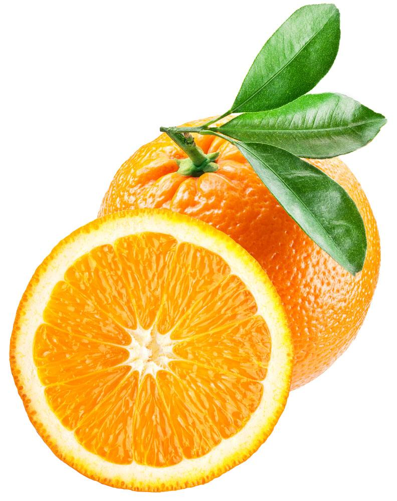

<!DOCTYPE html>
<html lang="en">
<head>
    <meta charset="UTF-8">
    <title>Title</title>
    <script src="js/vue.js"></script>
</head>
<body>
<div id="app">
    <abc></abc>
    <abc2></abc2>
    <abc3></abc3>
    <abc4></abc4>
    <abc5></abc5>
</div>

</body>
<script id="info" type="text/html">
    <div>
        
        <p>使用script标签创建</p>
    </div>
</script>
<template id="info2">
    <div>
        
        <p>vue最简创建组件方法</p>
    </div>
</template>
<script>

    //①
    //创建组件构造器
    let proFile = Vue.extend({
        //注意点：创建组件构造器的模板只能有个一根节点
        // template:''
        template:'' +
            '<div>' +
            '' +
            '<p>vue最原始的创建组件方法</p>'+
            '</div>'

    })
    //注册组件构造器
    //接收两个参数:1.指定组件的名称，2.已经创建的组件构造器
    Vue.component("abc",proFile)


    //②
    let obj = {
        template:'' +
            '<div>' +
            '' +
            '<p>vue最原始的创建组件方法2</p>'+
            '</div>'
    }
    Vue.component("abc2",obj)

    //③
    Vue.component("abc3",{
        template:'' +
            '<div>' +
            '' +
            '<p>vue最原始的创建组件方法</p>'+
            '</div>'
    })

    //④
    Vue.component("abc4",{template:"#info"})
    //⑤
    Vue.component("abc5",{template:"#info2"})

    let vue = new Vue({
        el:"#app"
    })

    </script>
</html>